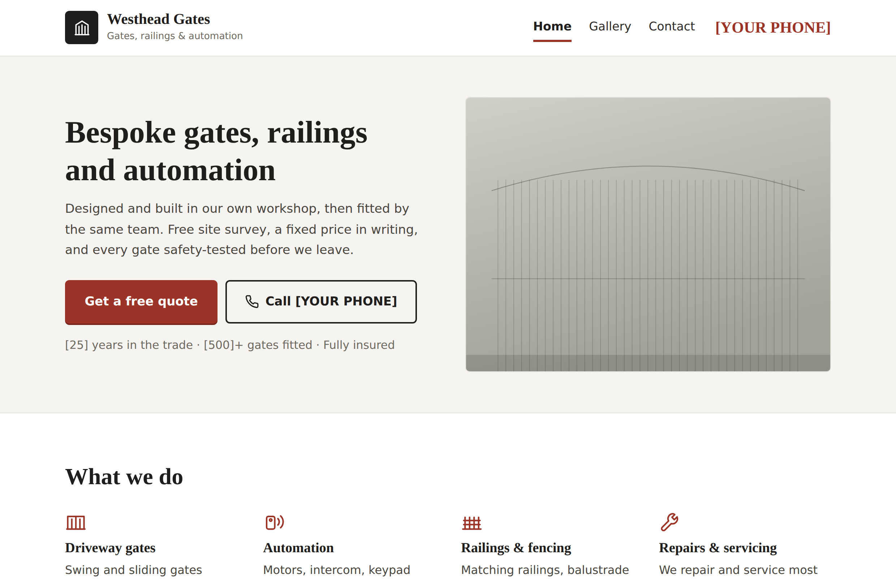
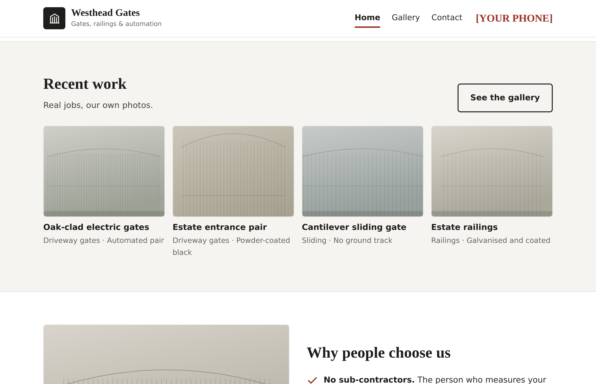
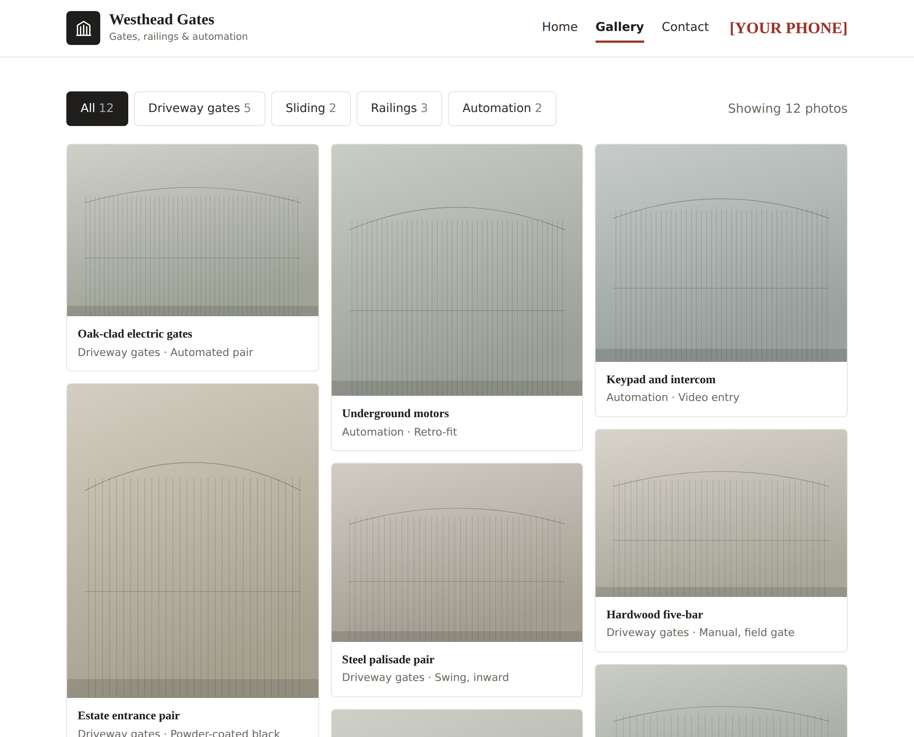
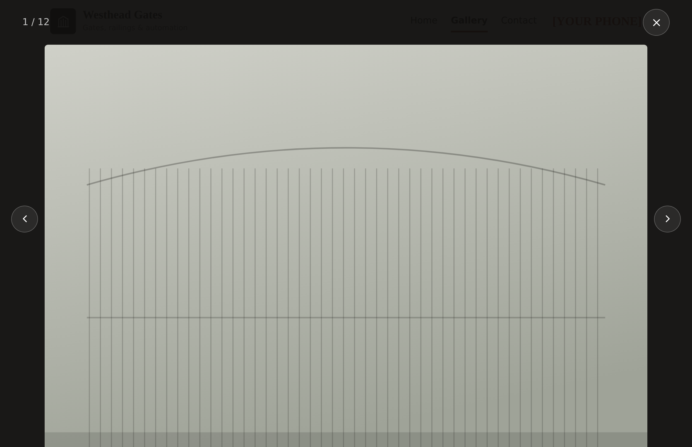
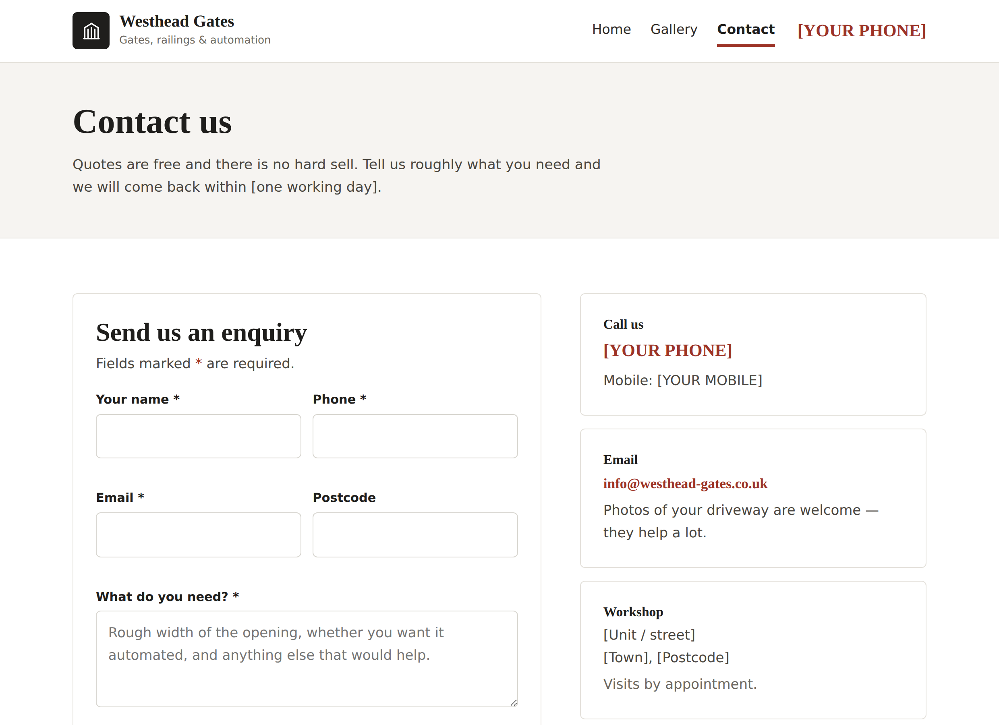
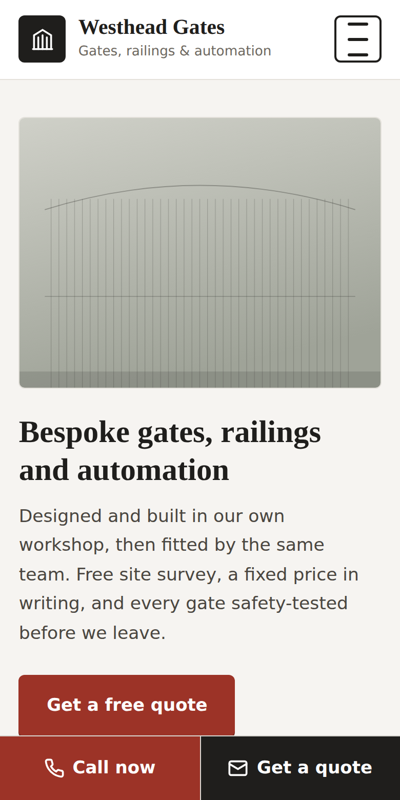
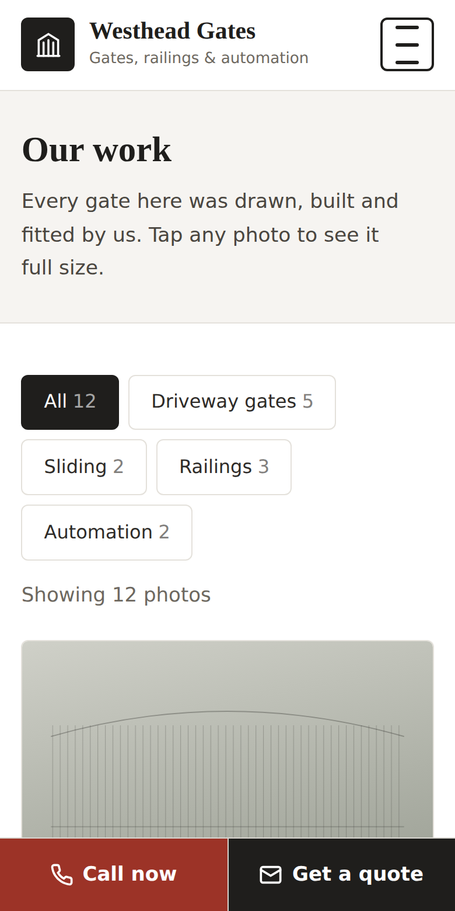

Website design proposal
A three-page website — home, gallery and contact — designed to turn people looking for a gate into people ringing you.
Overview
A clear, fast three-page website that does one job: get someone who needs a gate to pick up the phone. No clutter, nothing to learn, and nothing that gets in the way.
What you do, why people choose you, and a sample of recent work. Two ways to get in touch, visible from the moment the page loads.
Your work, full width, filterable by type. Photos open full size. This is the page that sells the job.
An enquiry form that emails you directly, alongside your phone number, email, address and opening hours.
The look
The scheme is called Ironstone — a near-black with a deep oxblood red. It was chosen over brighter options because it reads as established and serious rather than fashionable, and because it works as well printed on a van or a business card as it does on a screen.
Oxblood is used sparingly — buttons, links and small marks only. Everything else is black, white and warm grey, so the accent still means “do this” when a visitor sees it.
| Headings | Bitter — a sturdy slab serif. Solid and traditional without being old-fashioned. |
| Body text | Libre Franklin — chosen for plain readability at a larger size than most sites use. |
The pages are shown with placeholder photography — the grey panels with a gate outline. Those are stand-ins for your own photographs. Typefaces in these images are also close substitutes rather than the final Bitter and Libre Franklin, which load from the web when the site is live. Layout, colour, spacing and wording are all exactly as they will be.
Page one

Page one, continued

The four photographs update themselves. They are pulled straight from your gallery, so the newest work you upload appears here without anyone editing the page.
Four reasons, not twenty. No sub-contractors, a fixed price in writing, safety-tested and certified, and a workmanship guarantee. These are the things that decide whether someone rings you rather than the next firm.
Page two

There is no list to edit and nothing to log into. You copy photographs into a folder on the server and they appear on the website.
Page two, continued

Visitors can move between photographs with the arrows, the keyboard, or by swiping on a phone. It closes with the cross or the escape key. Small thing, but it is how people expect a gallery to behave, and it keeps them looking at your work for longer.
Page three

On a phone
More than half of enquiries to a business like yours come from a mobile — usually from someone standing on their own driveway. The site was laid out for that first.


Notice the two buttons fixed to the bottom of the screen — Call now and Get a quote. They never scroll away, and they sit where a thumb naturally rests. On a trade website this one detail typically brings in more calls than everything above it put together.
Scope
| Pages | Home, gallery, contact, plus a privacy notice and a “page not found” page. |
| Self-updating gallery | Add and remove photographs by copying files into a folder. No login, no admin panel, nothing to learn. |
| Enquiry form | Emails you directly, with spam protection. Works even if a visitor has JavaScript turned off. |
| Mobile and tablet | Every page tested at desktop, tablet and phone widths. |
| Search engine basics | Page titles and descriptions, a sitemap, structured business information, and social sharing previews. |
| Speed | No page builder and no plugins. Fewer things to go wrong and nothing to keep updated. |
| Hosting | Runs on your existing Plesk server. No new subscriptions. |
| Accessibility | Larger body text, high contrast, keyboard navigation and proper labelling throughout. |
Photography, copywriting beyond what is shown, online payments, a booking system, and individual pages for each service or town. Any of these can be added later — the site is built so that extra pages slot in without a rebuild.
Over to you
The design is finished. These are the pieces only you can supply.
| Photographs | The single most important item. Ten to twenty of your best finished jobs. Bright but overcast days work best, taken straight on and from a few steps back. These replace every grey panel in this document. |
| Phone numbers | The landline and mobile you want shown. |
| The proof line | Years in the trade, roughly how many gates you have fitted, and the length of your workmanship guarantee. If any of these are not accurate, we leave them off rather than round them up. |
| Address and hours | Workshop address and your opening times. |
| Company details | Company number and VAT number for the footer. |
| Privacy notice | Required by law once the enquiry form is live. We will draft it; you confirm it is accurate. |
A website like this stands or falls on its photographs. Everything else is in place and tested. If the photographs are good, the site will do its job; if they are phone snaps taken in the rain, no amount of design will make up for it. It is worth setting aside an afternoon for this.
Next
Adding photographs is yours to do whenever you like. If you would rather we handled it, or you want to add service or area pages later to bring in more search traffic, that can be quoted separately.
Anything at all in this document — get in touch and we will
talk it through.
[Your name]
[Your email]
[Your phone]
Prepared for Westhead Gates · [Date] · This document shows a proposed design and is not a contract.